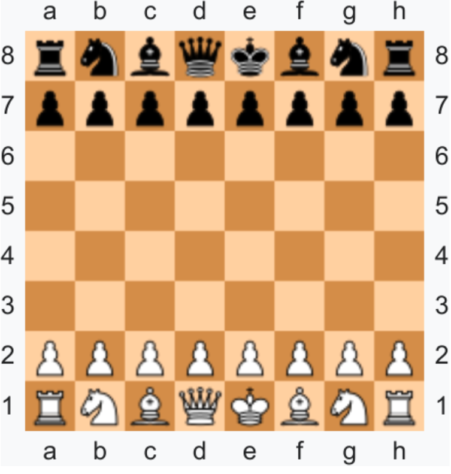

Chess Move Predictor

Description
This project is a C++ program that simulates a chess player capable of predicting its next move.
Developed in a team of four, we implemented multiple techniques to evaluate and select the best move, including:
Project made with Youssef Seghrouchni, Siyuan Lu and Ayoub Agouzoul.
Key Features
- Best Alpha-Beta pruning algorithm
- Opening move database
- Full implementation of all official chess rules